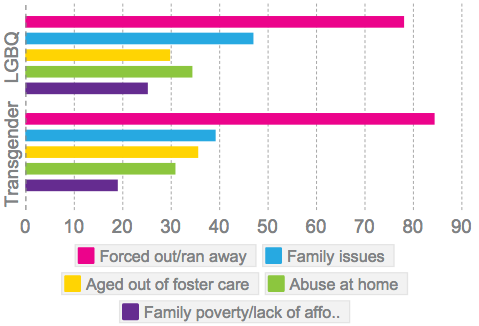
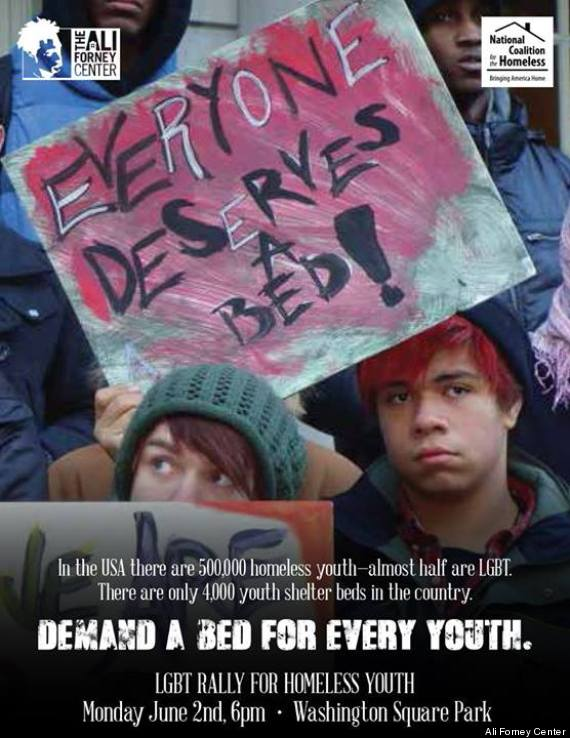

No More Homeless Youth
 In America, up to 1.6 million youth experience homelessness each year. The statistics for lesbian, gay, bisexual, and transgender (LGBT) homeless youth are even more shocking, as this group represents up to 40% all young people experiencing homelessness. Considering that LGBT youth represent an estimated 7% of the total youth population, these numbers are disproportionately high. While even a single young person without a home is one too many, the disparity of LGBT youth experiencing homelessness is unfathomable.
In America, up to 1.6 million youth experience homelessness each year. The statistics for lesbian, gay, bisexual, and transgender (LGBT) homeless youth are even more shocking, as this group represents up to 40% all young people experiencing homelessness. Considering that LGBT youth represent an estimated 7% of the total youth population, these numbers are disproportionately high. While even a single young person without a home is one too many, the disparity of LGBT youth experiencing homelessness is unfathomable.
 Once they are out of their homes, LGBT youth are even more vulnerable. They are at a greater risk for victimization, unsafe sexual practices, and mental health issues than non-LGBT young people experiencing homelessness.
Family conflict is the most common cause of all youth homelessness. For LGBT youth in particular, the conflict tends to be over their sexual orientation or gender identity – and the results aren’t pretty: Half of all teens get a negative reaction from their parents when they come out to them. More than 1 in 4 are thrown out of their homes.
 LGBT youth experience homelessness for a variety of other reasons, including the intersection of homophobia and transphobia, poverty, and failed systems. According to service providers, additional reasons include family issues, aging out of the foster care system, family poverty, and abuse in the home.
In terms of health care, LGBT youth tend to be underserved due to a shortage of clinics and facilities that cater to their unique health needs – and because some healthcare providers refuse to treat minors without parental consent.
We asked homeless youth service providers what they thought about the physical and mental health of the LGBTQ youth they serve. Overall, they reported the physical and mental health of LGBTQ youth experiencing homelessness are worse than that of non-LGBTQ youth. Notably, providers were more likely to report that transgender youth experienced these disparities.
We are building a movement to end homelessness among lesbian, gay, bisexual, and transgender (LGBT) youth, and everyone has a role to play – including you!